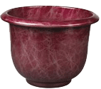
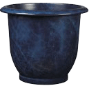
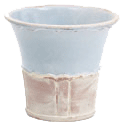
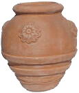
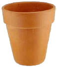
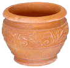
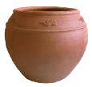

|
A selection of our products can be seen below. Remember that we have many more types of pots available. For a full listing of our pots, or to request a custom made pot, use our Contact Us page.
| Name |
Description |
|
| Red Earth |
This ceramic pot is hand crafted from the finest materials so that each one is unique. The pots are coated to increase durability. |
 |
| Night Sky |
This glazed ceramic pot is available in lighter and dark shades. These are especially well suited to formal gardens. |
 |
| Country Planter |
The more traditional look of this pot with its glaze design and decorative pattern will make it ideal for an informal outdoor setting. |
 |
| Chinese Clay Flower Pot |
This imported pot stands a little over 40 cm in height. The sealed finish makes it suitable for outdoor use. |
 |
| Italian Terracotta |
A very traditional looking 20cm high pot, with a narrow design, making it perfrect for long stemmed flowers. |
 |
| Carved Terracotta |
The carved design on this small pot can add some class to an entrance area or office setting. |
 |
| Classic Clay |
A classic design available with a glazed finish to make it suitable for your outdoor patio. |
 |
Home - About Us - Gallery - Ordering - Contact Us - Links |